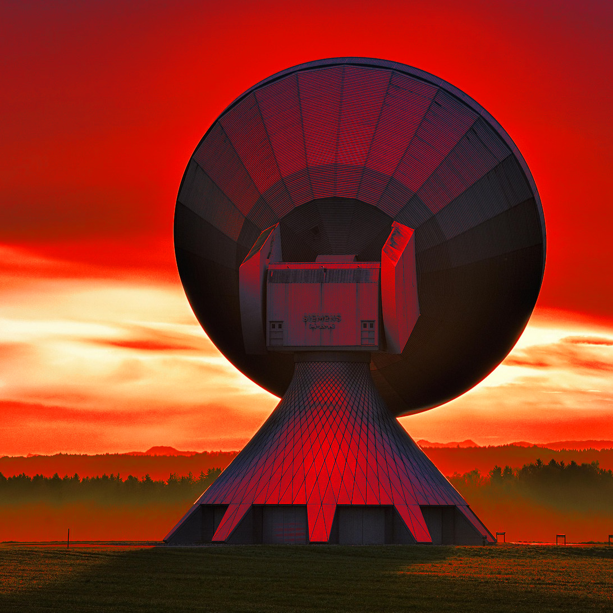

Missió 4: Inter \(\left\{ \begin{array}{l} \textbf{planetary}\\\textbf{net}\end{array} \right.\)¶
Després d’uns quants anys d’ús, la colònia per fi comença a apreciar el valor d’interconnectar xarxes heterogènies mitjançant el protocol IP. Tant, que han invertit en una potent HugeAntenna que, segons creuen, pot connectar la colònia amb la Internet de la Terra.
L’assemblea de la colònia està preocupada perquè no sap si les bases es podrien comunicar entre elles i, encara més important, amb la nova antena. A més, tem la represàlia despòtica de la Terra si no aconsegueixen establir una connexió amb Internet. Un cop més, et demanen ajuda.

⚠Atenció! Aquesta missió és crítica. Pren-te el temps que calgui, demana tota l’ajuda que necessitis i no perdis l’ànim. Les missions anteriors es poden considerar un entrenament per a aquesta – et recomanem molt que les acabis amb cura abans d’intentar aquesta.
Detalls de l’informe¶
Recorda la topologia de xarxa que es demanava a la missió anterior. A hores d’ara, hauries de tenir accés a un acord consensuat sobre la distribució d’adreces físiques i lògiques dels dispositius de la colònia (si no és així, digues-ho!).
Considera els routers (encaminadors) presents a la colònia: \(\{\textrm{RA}_i\}_{i=1}^{N}\) estan connectats al Bus Nord, \(\{\textrm{RB}_i\}_{i=1}^{N}\) al Bus Sud, i \(\textrm{R}_0\) enllaça tots dos busos. La nova antena es connectarà a un tercer controlador d’interfície de xarxa (NIC) de \(\textrm{R}_0\).
El teu objectiu és ajudar a configurar totes les màquines de la colònia (especialment els routers) perquè la informació pugui circular entre les bases i, sobretot, entre la colònia i la Internet de la Terra.
-
Resumeix les adreces físiques i lògiques de totes les màquines de la colònia perquè el teu informe sigui autocontingut. Et suggerim que reutilitzis la configuració que vas elaborar a la missió anterior, després de corregir qualsevol problema detectat. Fes servir el format CIDR sempre que sigui aplicable.
-
Proporciona les taules d’encaminament més senzilles que funcionin que siguis capaç de concebre per a les màquines següents:
-
Un router \(\textrm{RA}_i\) que triïs, i una màquina que no sigui router \(\textrm{M}_i\) connectada a \(\textrm{RA}_i\).
-
Un router \(\textrm{RB}_j\) que triïs, i una màquina que no sigui router \(\textrm{M}_j\) connectada a \(\textrm{RB}_j\).
-
El router \(\textrm{R}_0\).
-
-
Crea dos diagrames de tipus swimlane que mostrin tots els paquets transferits dins de la colònia per als dos intercanvis següents. Per a cada paquet d’aquests diagrames, indica totes les adreces que conté. Assegura’t d’especificar en algun lloc la MTU de totes les LAN (xarxes d’àrea local) implicades en els intercanvis.
-
\(\textrm{M}_i\) envia unes dades a \(\textrm{M}_j\), i \(\textrm{M}_j\) li torna una resposta.
-
\(\textrm{M}_i\) envia un missatge a un servidor de la Terra, però no rep cap resposta.
-
Detalls de la retroacció¶
Fes servir un procés de retroacció semblant al de les missions anteriors, i assegura’t de tractar aquests punts:
-
Hi ha cap problema amb l’assignació d’adreces físiques i lògiques?
-
S’ha fet servir correctament el format CIDR?
-
Les taules d’encaminament contenen tots els camps necessaris?
-
Es pot simplificar més alguna de les taules?
-
Els lliuraments directes i indirectes es representen correctament als diagrames swimlane?
-
Les MTU són coherents amb els diagrames?